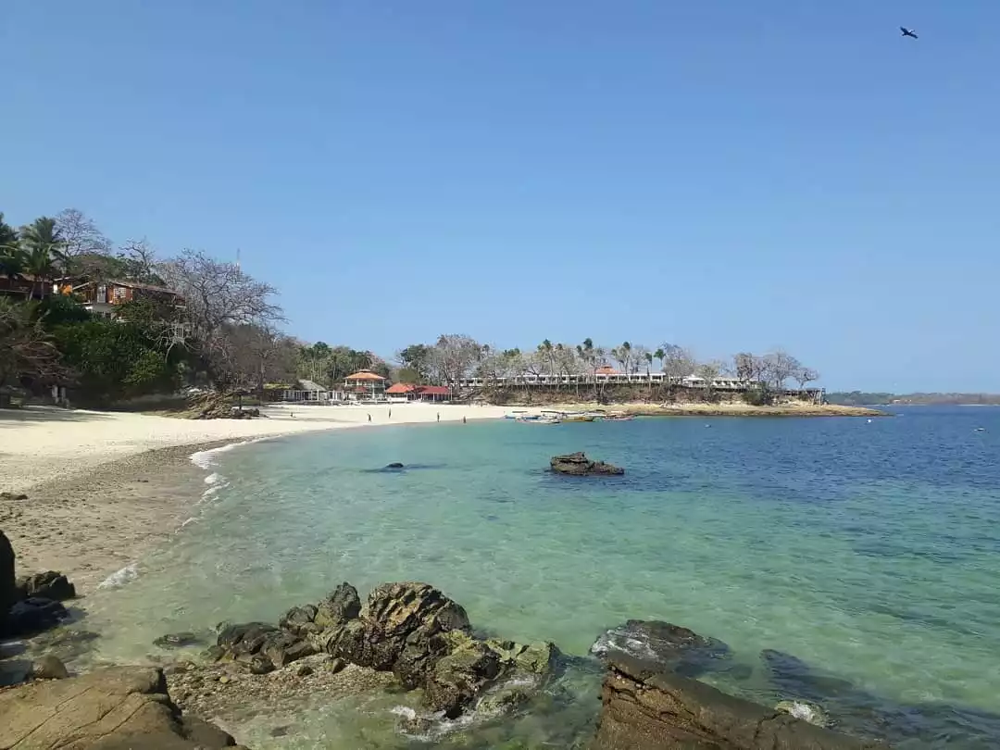
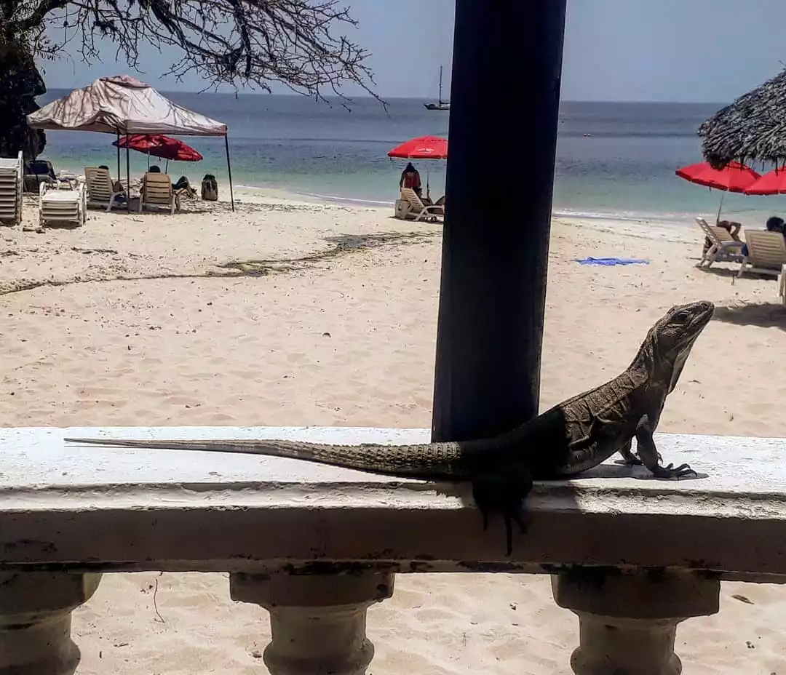
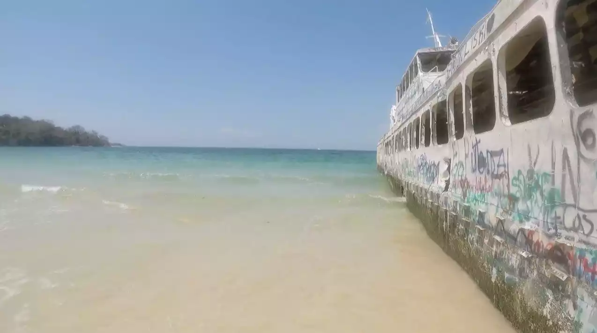

Por Gonzalo Volpe Gómez
Amo investigar los destinos. ¿Por qué arrancar un texto con esta frase? Porque a diferencia de muchos viajeros disfruto verdaderamente estudiar el destino y encontrar esos puntos ínfimos que nadie conoce, comienzo a viajar desde que me siento enfrente a una computadora a planificar. Así por ejemplo, descubrí, entre otros lugares, las Islas Perhentian en Malasia.
Estaba confirmadísimo mi viaje a Panamá y ya sabía que iría a conocer Portobelo y las islas de Guna Yala (San Blas), ambas en la costa caribeña de Panamá. Sin embargo, había algo en mi que me decía que necesitaba una aventura más, eran perfectos los lugares que había elegido y también Ciudad de Panamá. ¿Pero qué hay de cierto que las playas del Pacífico no se pueden ni comparar con las del Caribe? Fue así que decidí inspeccionar y encontré diversas opciones disponibles.
Playa Galeón, Isla Contadora, Panamá.
Buscando y buscando, di con la isla Taboga, la más cercana a Panamá Ciudad, a la cual se puede llegar por unos 24 dólares ida y vuelta (podés ver los precios y horarios actualizados en Taboga Express). Sin embargo, después de ver las imágenes y leer las recomendaciones descubrí que existía otro lugar, llamado Archipiélago de Las Perla, el cual se encuentra más alejado de Panamá Ciudad pero al que todos los foristas lo destacaban como un paraíso de playas increíbles que nada tienen que envidiarle al Caribe. Así fue que decidí conocer este archipiélago que contiene diversas islas, las más cercanas son Isla Saboga a la cual podemos llegar por aproximadamente 90 dólares ida y vuelta e Isla Contadora que cuesta alrededor de unos 98 dólares ambos trayectos. Podés conocer los horarios y precios actualizados en la web de Sea Las Perlas.
Los precios y horarios están sujetos a constantes cambios. Te recomiendo que los chequees en las páginas oficiales antes de comenzar tu viaje.
En 1:30hs el Ferry se encontraba llegando a Contadora, apenas descendí en Playa Galeón pude apreciar el color cristalino del mar que permitía que los rayos de un sol pleno atravesarán el agua y se reflejen en la arena del fondo. Había muy poco movimiento de personas, solo una pareja echadita tomando el sol, y fue ahí que me invadió ese sentimiento libertador tan placentero de sentir que un lugar es todo para mi. Mi intención principal era poder filmar buen material para hacer un video y tenía todo el día y una paz increíble para hacerlo.
Playa Cacique, Isla Contadora, Panamá.
Tenía una pequeña ruta pre-armada de playas que quería conocer, debido a que son unas cuantas y no alcanza solo con un día para todas. También, sabía que se podían alquilar carritos de golf pero en la isla todo es caro y lo que menos tenía era dinero en los bolsillos. Me decidí a hacer dedo y rápidamente me levantó un señor estadounidense con su hijita pequeña montados en un carrtio de golf. Muy gentilmente y hablandome de un modo casi inentendible me alcanzaron a mi primer parada: Playa Ejecutiva. La misma es una playita más bien pequeña y de agua calma, pero de un tono extremadamente cristalino. El único problema fue que ese día estaba plagado de unas pequeñas medusas con terminaciones violetas que no hacian más que invitarme a imaginar un fin de vacaciones en el hospital. El baño fue imposible y continue, otra vez haciendo dedo, hacia la Playa Cacique.
Cacique, cuenta con la particularidad de ser la única con restaurante, el cual pertenece a un hotel local. Allí comí unos bastones de queso con salsa agridulce exquisitos y me decidí a tomarme una Coronita, nada mejor para disfrutar el sol del mediodía que ardía mucho más de lo que estamos acostumbrado en Buenos Aires. Después del deleite, me dediqué a hacer el primer baño del día y a nadar un poco. Cacique se encuentra expuesta a mar abierto, por lo tanto, si les gustan las olas que rompen, es su lugar predilecto en la isla.
El horario de vuelta hacia Playa Galeón era a las 15:30hs y todavía me faltaba conocer la playa, que junto con Cacique, tenían las mejores críticas web. Así que esta vez caminando, me decidí a cruzarme la isla y volver hasta el ingreso, donde después de bordear la pista de aterrizaje de helicópteros y caminar unas pocas cuadras llegué a Playa Larga.
Playa Larga, Isla Contadora, Panamá.
Absolutamente toda la arquitectura que había visto en la isla era vieja, con casas y hoteles en deterioro, ilustrando una verdad irrefutable: Contadora era la isla que supo ser pero que ya no era. El contraste máximo lo sentí, cuando llegando a Playa Larga, vi que estaban construyendo un edificio modernísimo enfrente de la playa más hermosa de la isla, con aguas sumamente cristalinas y mansas y al menos ese día, con poquísimas personas. ¿La isla que supo ser quiere volver a ser? La paz reinó en mi y después de un baño tranquilo decidí ir a caminar por la orilla inmensa la cual hace verdaderamente honor al nombre de la playa.
Sin embargo, mi curiosidad le ganó a la paz cuando divisé a lo lejos, en una de las puntas de la playa, un barco totalmente abandonado, erosionado por el agua que lo rodeaba, violentado con pintadas macabras en aerosol y un aspecto deplorable. Fue solo llegar ahí que entendí que en Contadora había algo más, una historia que no entendía y de la cual no se hablaba en internet. Mi certeza fue mayor, cuando llegué al barco y vi que estaba enfrente de un hotel incinerado y abandonado. El espíritu aventurero me impulsó a acercarme y a descubrir las ruinas de lo que fue el Hotel Contadora. Una mezcla de escombros con pastizales escalofriante.
Embarcación "Las 7 Perlas" abandonada en la Playa Larga, Isla Contadora, Panamá.
El tiempo no me dio para mucho más, pero tenía miles de interrogantes que me habían surgido en la última media hora de mi visita a la isla. En la vuelta en barco tuve la suerte de viajar al lado de un militar que trabajaba en la isla y tras una breve introducción pregunte: ¿Qué era ese hotel? y ¿Qué sucedió con la isla? El señor, haciendo una introducción como las típicas del programa "Le temes a la oscuridad" me explicó que entre los años 70 y 80 Contadora había sido una meca donde se reunian presidentes, vacacionaban famosos millonarios y magnates de distintos rubros, donde se llegó a formar una comunidad flotante que vivía para abastecer al hotel y a todas las celebridades que llegaban a la joya panameña de la época. Entre los nombres más importantes que me mencionó se encontraba Christian Dior, John Wayne, Sofía Loren y hasta la familia Kennedy. Lo más extraño, es que sin motivo alguno, la isla empezó a decaer de una manera estrepitosa y acelerada, hasta que en 2009 el Hotel Contadora cerró sus puertas para siempre.
Playa Larga, Isla Contadora, Panamá.
Solo después de conocer la historia y el nombre del hotel pude encontrar escasa información en la web. Si hay algo que me dejó Contadora, además de sus playas increíbles, es que siempre se conoce más en los lugares que sentados detrás de una computadora.